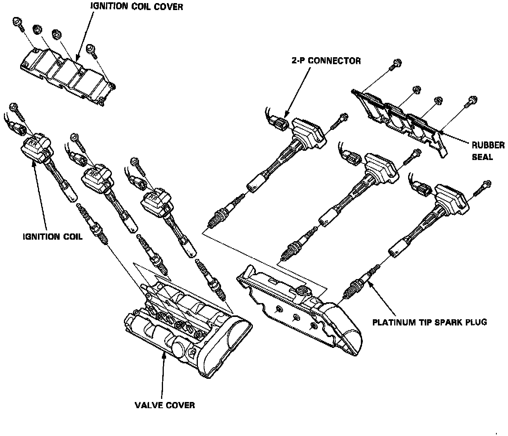

Spark Plug: Service and Repair
CAUTION: Ignition coils and spark plugs can become very hot in use, do not touch them until the engine has cooled down.
1. Remove the ignition coil covers.
2. Disconnect the 2-P connectors from the ignition coils.
3. Remove the ignition coils.
4. Remove the spark plugs.
NOTE: Different ignition coils and ignition coil covers are used for the front and rear cylinders. Be sure to use the correct ones when mounting them.